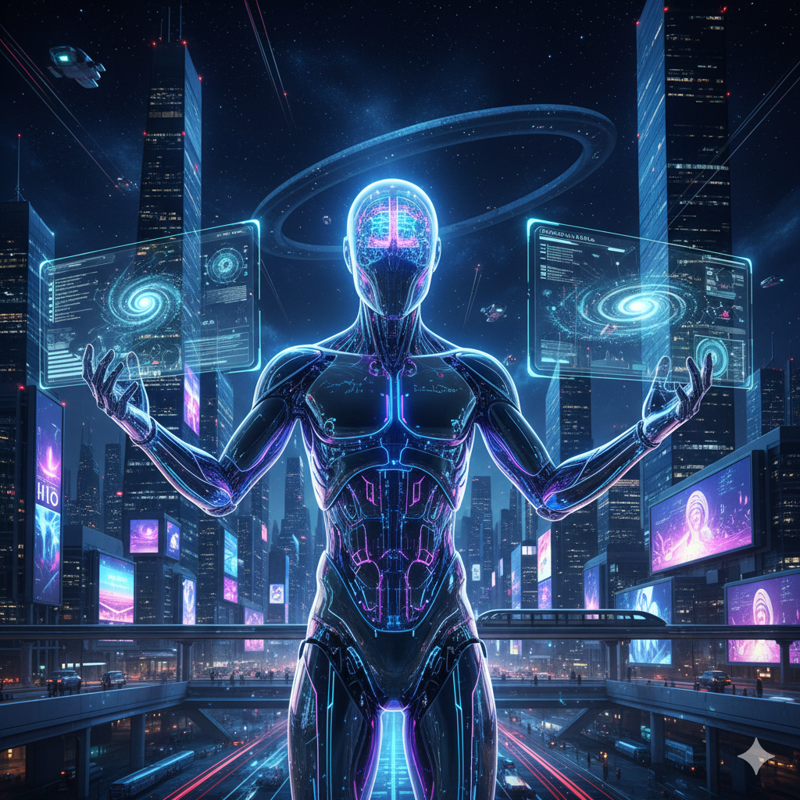

Desafíos Éticos y Futuro de la IA
Se estima que para el año 2030[1], la IA habrá transformado el empleo. [cite: 26]
La inteligencia artificial en el futuro traerá oportunidades y desafíos. Es importante pensar en la Privacidad, seguridad y ética en el desarrollo de estas tecnologías.
